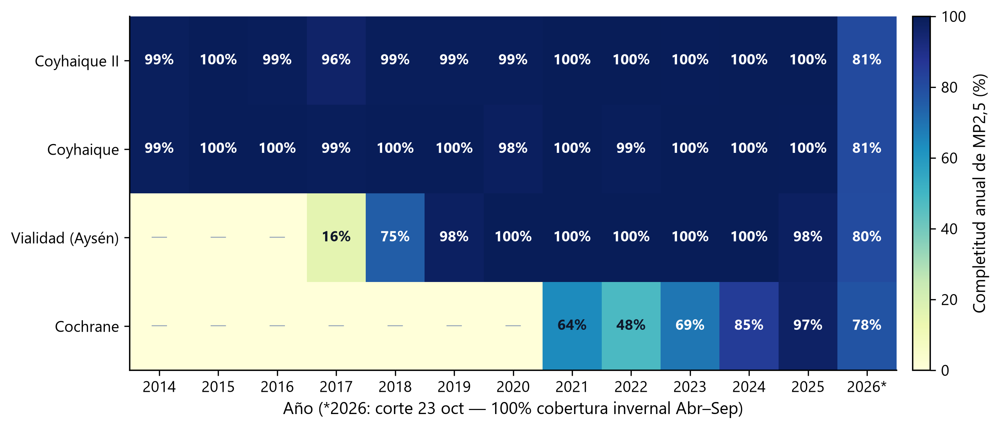
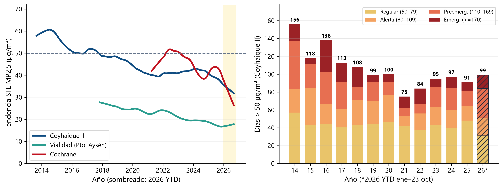
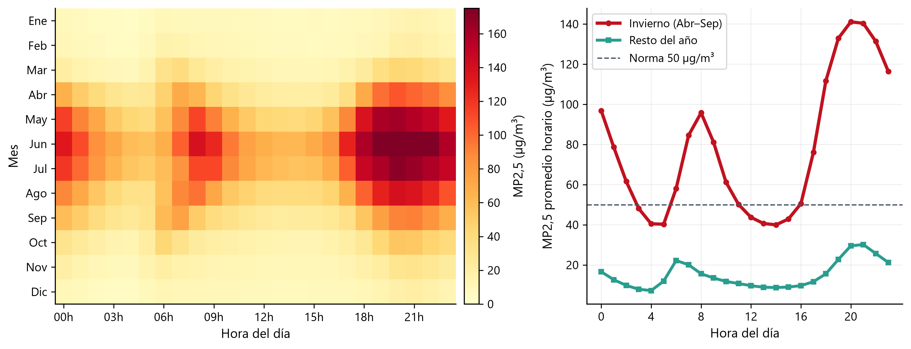
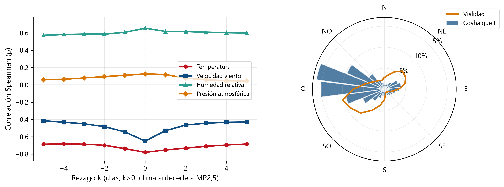
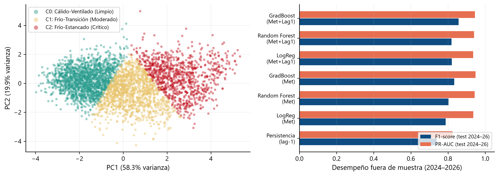

MP2,5 y Clima en la
Región de Aysén
Caracterización visual, descomposición de series de tiempo y regímenes meteorológicos sobre 13 años de registros horarios oficiales del SINCA (2013–2026).
Una crisis invernal oculta en tablas estáticas
- Zona saturada por MP2,5: Coyhaique supera reiteradamente la norma diaria de 50 µg/m³ por combustión residencial de leña entre abril y septiembre [1]–[4].
- Escala multivariada: Más de 115.200 registros horarios por serie en Coyhaique II, imposibles de diagnosticar en planillas planas.
- Brecha del portal SINCA: Descarga series aisladas sin comparar ciudades, separar tendencia STL ni vincular episodios con la meteorología local.
¿Cómo han evolucionado los episodios de MP2,5 en Aysén entre 2013 y 2026, y qué condiciones climáticas se asocian a ellos?
- OE1 · Patrones: Describir ciclos diarios, estacionales y sincronía entre Coyhaique, Puerto Aysén y Cochrane.
- OE2 · Tendencias: Cuantificar tendencias interanuales controlando vacíos y el año incompleto 2026.
- OE3 · Regímenes: Asociar episodios con clima mediante CCF, PCA y clustering validado objetivamente.
Tres correcciones que elevaron el rigor del estudio
Series de tiempo y Power BI
- Descomposición STL robusta, Mann–Kendall + Sen, ACF/PACF y CCF.
- Pruebas y prototipo Dash en Python → esquema estrella (8 tablas) + DAX para Power BI.
- Clasificación temporal solo como validación explicativa del clima.
Faltantes y año 2026
- Auditoría completa de 25 CSV: exclusión de NO, NOx y NO₂ (>70% vacíos).
- Regla DS 12 estricta (≥18 h válidas); sin imputación de huecos largos.
- 2026 (corte 23 oct) separado en años completos, ventana YTD e invierno (100%).
Verificación de viento
- Verificado en los CSV: SINCA no entrega dirección horaria en ninguna estación.
- Solo existen tablas agregadas de 24 sectores (ausentes en Cochrane).
- Rosa acotada al régimen histórico; episodios estudiados con velocidad del viento.
Cobertura histórica y control del corte 2026

- Ventana YTD comparable: Del 1 de enero al 23 de octubre se concentra el 99,7% de los episodios históricos de Coyhaique II, habilitando evaluar 2026 sin sesgo.
- Depuración de gases: NO (9,2%), NOx (10,0%) y NO₂ (30,0%) se descartaron del análisis multivariado.
- Trazabilidad SINCA: 16,6% de días 2026 en Coyhaique II y 100% de Cochrane 2021–2023 son preliminares o no validados.
Criterios cuantitativos sobre vistas candidatas
| Vista candidata | Perc. [8] | Clar. | Esc. (s) | Total |
|---|---|---|---|---|
| Serie mensual + tendencia STL | 3 | 3 | 0,59 s | 12 / 12 |
| Barras apiladas GEC (DS 12) | 3 | 3 | 0,09 s | 12 / 12 |
| Mapa de calor (hora × mes) | 2 | 3 | 0,08 s | 11 / 12 |
| Calendario diario 13 años (descartado) | 1 | 2 | 0,04 s | 8 / 12 |
Carga completa del esquema estrella Power BI (7 tablas): 0,089 s — 160× más rápido que el umbral propuesto de 15 s.
Selección objetiva de series y ML
- STL robusto vs. clásico: Elegido por reducir casi a la mitad el residuo MAD en Coyhaique II (2,81 vs. 5,01 µg/m³).
- Clustering (k = 2..6): K-Means, GMM y Ward contrastados con Silueta, Davies–Bouldin, Calinski–Harabasz y estabilidad temporal (ARI entre mitades 2015–20 y 2021–26).
- Validación explicativa: GridSearchCV con TimeSeriesSplit (5 particiones, 2015–2023) y prueba estricta fuera de muestra en 2024–2026 (F1, PR-AUC, ROC-AUC).
Coyhaique redujo sus episodios durante una década — pero 2026 repuntó y Cochrane ya supera a la capital.
Tendencia STL regional y días sobre norma DS 12

Estacionalidad 5,1× y pulso nocturno de la leña

En invierno, la calma eólica manda sobre el frío

K-Means (k = 3) aísla el régimen anticiclónico crítico

Prototipo Plotly Dash y modelo estrella para Power BI
- Filtros sincronizados: Selección de 4 estaciones, rango 2014–2026 y conmutador YTD / Invierno / Años completos.
- 5 vistas validadas: STL y GEC, Heatmap horario, Mapa regional SINCA, CCF + Rosa climatológica y Biplot PCA/Clusters.
- Transparencia en vivo: Tarjetas KPI muestran completitud (%) y fracción de datos preliminares en cada consulta.
- 2 dimensiones: dim_estacion (coordenadas) y dim_fecha con banderas is_ytd_comparable e is_winter_season.
- 6 tablas de hechos: Diaria DS 12, matriz 12×24, completitud anual, STL, PCA/clusters y rosa de vientos (carga total 0,089 s).
- Medidas DAX: Cumplimiento DS 12, categorías GEC, tasa YTD y clima en episodios listas en medidas.dax.
Lo que el análisis demuestra y sus fronteras
- 13 años oficiales: Más de 98% de completitud de MP2,5 en Coyhaique II y auditoría de 25 series SINCA.
- Control del año 2026: Tratamiento auditable de vacíos, regla DS 12 y ventana YTD comparable sin sesgos.
- Rigor cuantitativo: STL robusto, K-Means estable (ARI 0,974), validación temporal y selección visual objetiva.
- Transferencia lista: Esquema estrella y DAX preparados para despliegue directo en Power BI.
- Sin dirección horaria: SINCA solo entrega rosa agregada histórica; impide filtrar direcciones por episodio.
- Variables ausentes: No se cuenta con precipitación horaria ni altura de capa límite atmosférica.
- Brecha territorial: Solo 4 estaciones; meteorología incompleta en Vialidad (60,6%) e inexistente en Cochrane.
- Asociación, no causalidad: Diseño observacional con datos preliminares en 2026 (16,6%–31,9%).
La contaminación disminuyó en una década, pero el estancamiento anticiclónico invernal mantiene en riesgo a Coyhaique y Cochrane.
Ampliar instrumentación meteorológica completa a Cochrane y publicar dirección horaria de viento en SINCA.
Integrar series de precipitación de la DMC y desplegar el panel en Power BI Service con actualización periódica.
Evaluar modelos dinámicos SARIMAX de 24–48 horas apoyados en la persistencia AR(1) y el régimen sinóptico.